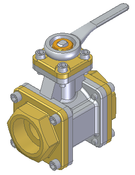
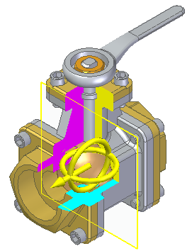
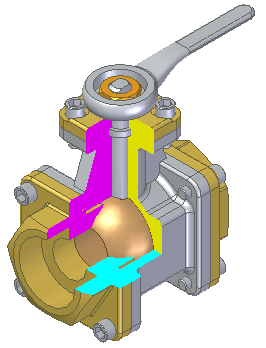
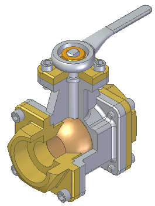
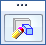
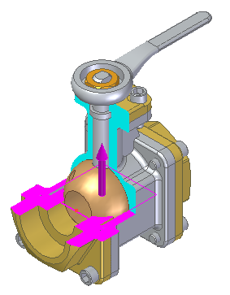
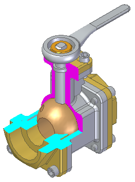

Section by Plane command
Use the PMI tab→Model Views group→Section by Plane command  to create a 3D section view of the active model using one to three cutting planes
for exposing the internal components. The section can cut through the entire part
or it can be bounded by the intersections of the cutting planes.
to create a 3D section view of the active model using one to three cutting planes
for exposing the internal components. The section can cut through the entire part
or it can be bounded by the intersections of the cutting planes.
You can create non-associative (default) or associative cut planes. The default is non-associative cut planes.
Non-associative cut plane
The cut planes can be moved and rotated to adjust where the cut is applied. The side of the cut plane to remove can be changed by flipping the cut direction. To flip the cut direction, press the F key or double-click the cut plane direction arrow. You also have control of what parts or bodies participate in the cut.




- Display
-
When the section view definition is complete, it is stored in the Section Views collector in PathFinder. You can turn off the section view display by clicking the section box in Pathfinder.
- Editing
-
To edit the section view, right-click the section view item in Pathfinder and either click Edit Definition on the shortcut menu or click the Edit Definition box

in the model window. Go back to any step or option on the Section by Plane command bar to make edits.
Associative cut plane
You can use the Associative Plane button  on the command bar to create associative plane cuts. The command bar changes to display
the plane type creation list.
on the command bar to create associative plane cuts. The command bar changes to display
the plane type creation list.
The associative cut planes are created using the methods in the Plane Type list. You can position the cut planes using keypoints or by key-in values on the command bar. Associative cut planes update when model geometry changes.
Cut direction is determined by the normal face of the plane. Cut direction cannot be changed by flipping. The plane must be recreated to produce the required normal direction.



- Display
-
When the section view definition is complete, it is stored in the Section Views collector in PathFinder. You can turn off the section view display by clicking the section box in Pathfinder.
- Editing
-
To edit an associative cut plane, double-click the arrow on the cut plane, and then redefine the plane.
How do I
Create a 3D section view (synchronous environment)Create a 3D section view (ordered environment)
Edit a 3D section view
Apply or remove a section cut
Expose a 3D section in a drawing
Create a section view using non-associative planes
Create a section view using associative planes
Learn more
3D section views of modelsLook up more details
3D section view editing commandsProperties command (3D section views)
Section Display Options command (3D section views)
Section Display Options dialog box
Section Options dialog box (3D sections)
Section command bar (synchronous environment)
Section command bar (ordered environment)
Edit Profile command (3D section views)
Section command (Part, Sheet Metal, and Assembly)
Section by Plane command bar
Section by Plane Options dialog box